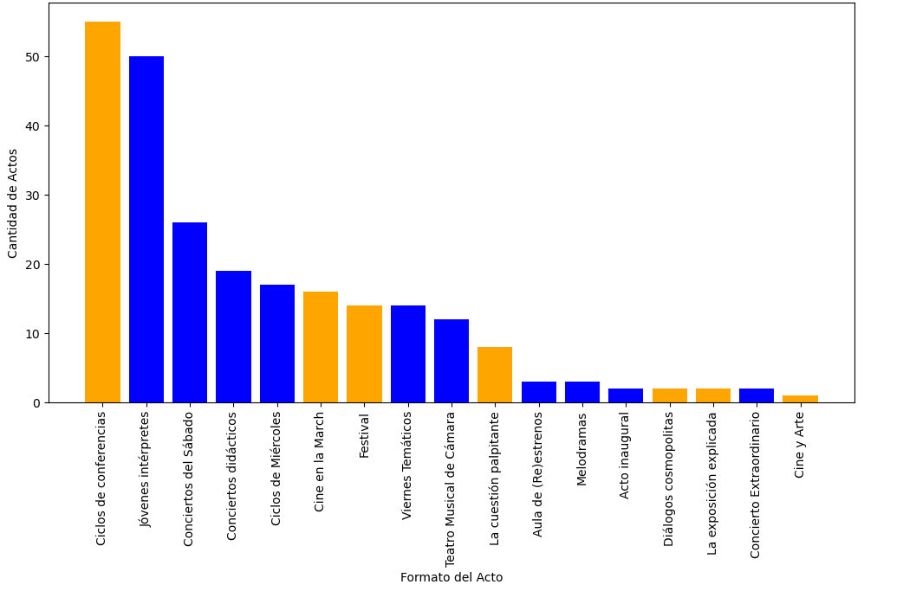
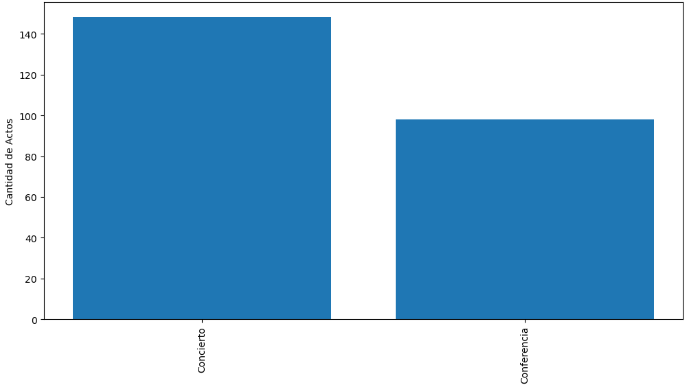

En esta sección se presentan diferentes gráficos y representaciones visuales que permiten
analizar la distribución de los datos, identificar tendencias y patrones clave para la
toma de decisiones.
Gráfico de Distribución
# Contar la cantidad de cada tipo de acto
tipo_acto_counts = df_combinado['tipo'].value_counts()
# Crear la gráfica de pastel (queso)
plt.figure(figsize=(8, 8))
plt.pie(tipo_acto_counts, labels=tipo_acto_counts.index, autopct='%1.1f%%', startangle=90, wedgeprops={'edgecolor': 'black'})
# Añadir título
plt.title('Distribución de Tipos de Actos en la Temporada')
# Mostrar la gráfica
plt.show()
Gráfico de Barras

# Contar la cantidad de cada formato
formato_counts = df_combinado['formato'].value_counts()
# Crear un diccionario que mapea cada formato a su tipo
formato_a_tipo = df_combinado.set_index('formato')['tipo'].to_dict()
# Definir colores basados en el campo 'tipo'
colores = ['orange' if formato_a_tipo[formato].lower() == 'conferencia'
else 'blue' if formato_a_tipo[formato].lower() == 'concierto'
else 'gray'
for formato in formato_counts.index]
# Crear la gráfica de barras con colores personalizados
plt.figure(figsize=(12, 6))
plt.bar(formato_counts.index, formato_counts.values, color=colores)
# Añadir etiquetas y título
plt.xlabel("Formato del Acto")
plt.ylabel("Cantidad de Actos")
plt.title("Cantidad de Actos por Formato")
# Rotar etiquetas del eje X para mejorar visibilidad
plt.xticks(rotation=90)
# Mostrar la gráfica
plt.show()
Gráfico de Líneas

tipo_acto_counts = df_combinado['tipo'].value_counts()
plt.figure(figsize=(12, 6))
plt.bar(tipo_acto_counts.index, tipo_acto_counts.values)
plt.xlabel("Tipo de Acto")
plt.ylabel("Cantidad de Actos")
plt.title("Cantidad de Actos por Tipo")
plt.xticks(rotation=90)
plt.show()